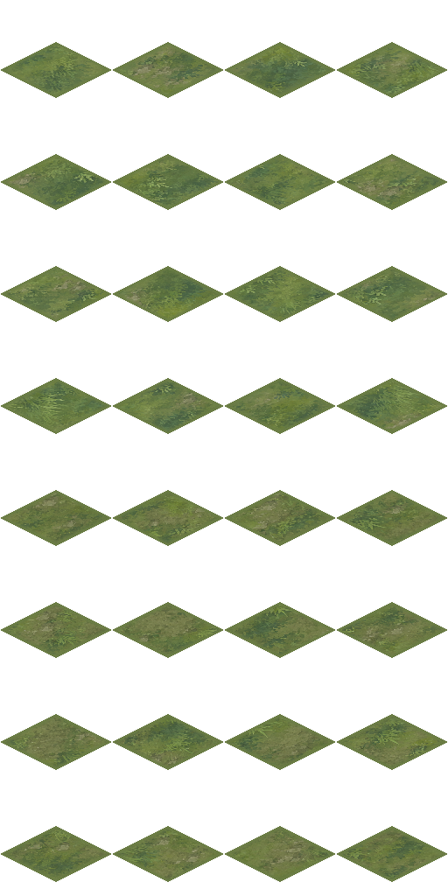
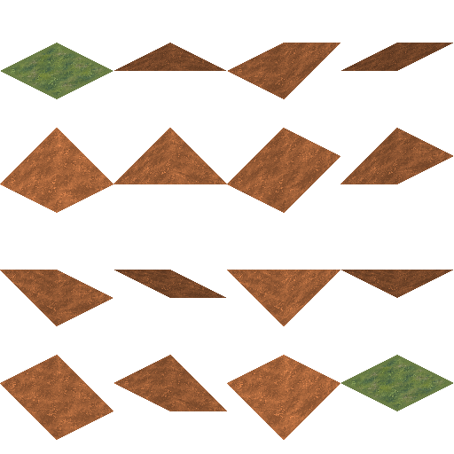
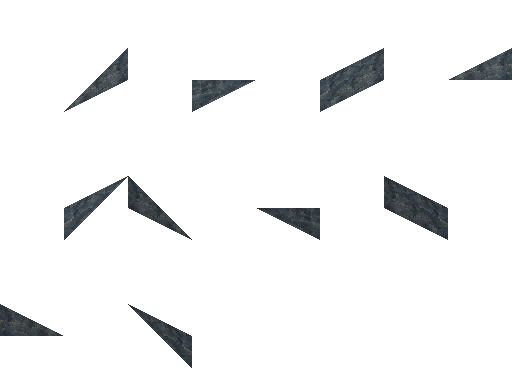
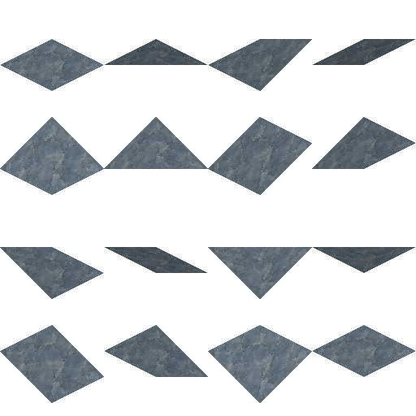
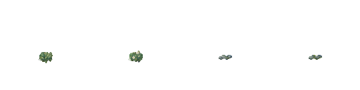

Chọn một nhóm → gửi SAMPLE + MASK → dùng prompt bên dưới. GUIDE và ảnh tổng quan chỉ để tham khảo.
Xem ảnh tổng quan · Concept phong cách
32 ô · 512 × 1024

Ảnh SAMPLE · Ảnh MASK · Ảnh GUIDE
Generate a flat square diffuse material for an original xianxia RTS. The sample/mask sheets explain geometry only; do NOT generate indexed tiles, isometric diamonds, standalone mountains or cliffs. Code builds those shapes. Use quiet jade/sage meadow or muted blue-grey slate as appropriate, calm colour fields, restrained hand-painted detail, even lighting, matching opposite edges. No text, grid, vignette, black background, characters, trees or buildings. For the current four-material specification, use ArtSource/Terrain/JadeSlate/prompt.md. Material role: Mặt đất. Geometry is handled by the project pipeline.
16 ô · 512 × 512

Ảnh SAMPLE · Ảnh MASK · Ảnh GUIDE
Generate a flat square diffuse material for an original xianxia RTS. The sample/mask sheets explain geometry only; do NOT generate indexed tiles, isometric diamonds, standalone mountains or cliffs. Code builds those shapes. Use quiet jade/sage meadow or muted blue-grey slate as appropriate, calm colour fields, restrained hand-painted detail, even lighting, matching opposite edges. No text, grid, vignette, black background, characters, trees or buildings. For the current four-material specification, use ArtSource/Terrain/JadeSlate/prompt.md. Material role: Terrain và ramp. Geometry is handled by the project pipeline.
10 ô · 512 × 384

Ảnh SAMPLE · Ảnh MASK · Ảnh GUIDE
Generate a flat square diffuse material for an original xianxia RTS. The sample/mask sheets explain geometry only; do NOT generate indexed tiles, isometric diamonds, standalone mountains or cliffs. Code builds those shapes. Use quiet jade/sage meadow or muted blue-grey slate as appropriate, calm colour fields, restrained hand-painted detail, even lighting, matching opposite edges. No text, grid, vignette, black background, characters, trees or buildings. For the current four-material specification, use ArtSource/Terrain/JadeSlate/prompt.md. Material role: Vách cliff. Geometry is handled by the project pipeline.
16 ô · 512 × 512

Ảnh SAMPLE · Ảnh MASK · Ảnh GUIDE
Generate a flat square diffuse material for an original xianxia RTS. The sample/mask sheets explain geometry only; do NOT generate indexed tiles, isometric diamonds, standalone mountains or cliffs. Code builds those shapes. Use quiet jade/sage meadow or muted blue-grey slate as appropriate, calm colour fields, restrained hand-painted detail, even lighting, matching opposite edges. No text, grid, vignette, black background, characters, trees or buildings. For the current four-material specification, use ArtSource/Terrain/JadeSlate/prompt.md. Material role: Núi ghép. Geometry is handled by the project pipeline.
4 ô · 512 × 128

Ảnh SAMPLE · Ảnh MASK · Ảnh GUIDE
Generate a flat square diffuse material for an original xianxia RTS. The sample/mask sheets explain geometry only; do NOT generate indexed tiles, isometric diamonds, standalone mountains or cliffs. Code builds those shapes. Use quiet jade/sage meadow or muted blue-grey slate as appropriate, calm colour fields, restrained hand-painted detail, even lighting, matching opposite edges. No text, grid, vignette, black background, characters, trees or buildings. For the current four-material specification, use ArtSource/Terrain/JadeSlate/prompt.md. Material role: Trang trí nhỏ. Geometry is handled by the project pipeline.